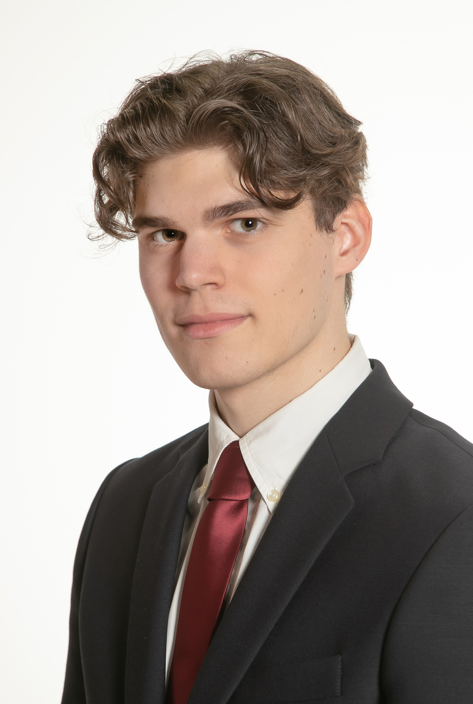
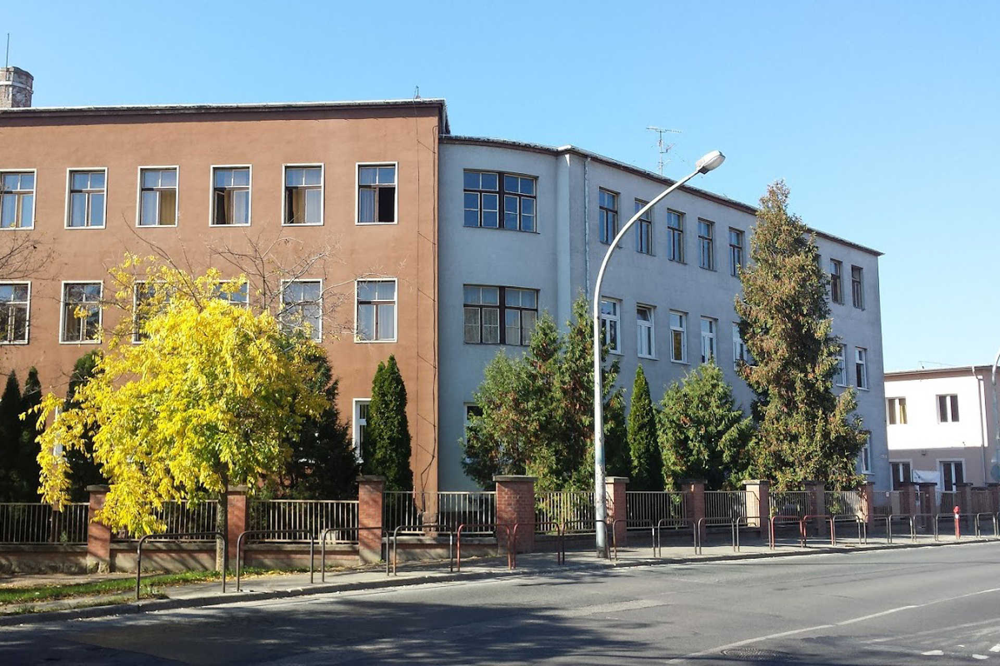
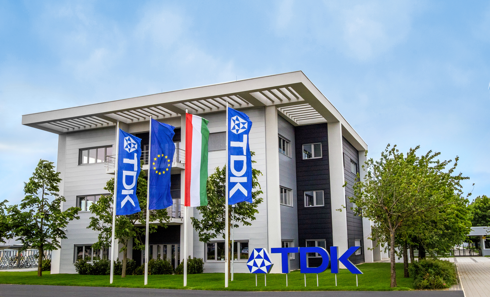

Mareta Kornél vagyok, 19 éves és a VVSzC Gépipari és Informatikai Technikum tanulója az ipari informatikai technikus szakon immáron 5. éve. Eme portfólió az elmúlt 5 évemen alapul, a megszerzett tudásaimon és az elsajátított kézségeimen. Eleinte inkább a mélyebb programozás irányába szerettem volna tovább tanulni, de a szaknak és az iskolának, meg persze a TDK Hungary Components Kft. által nyújtott duális képzésnek köszönhetően az érdeklődésem az elektronika irányába terelődött.

Az elmúlt 5 évben rengeteg újdonságot tanultam, ezt a szakmában való járatlanságomnak de legfőképp a tanáraimnak és oktatóimnak köszönhetem akik mindent megtettek hogy a legjobb tudást és segítséget biztosítsák számunkra. Az iskolában részt vettem különféle szakmai előadásokon, amik szintúgy hozzájárultak a fejlődésemhez. 10. osztály végén letettem az ágazati vizsgát és a következő évtől kezdve még többet és többet tanulhattam az általam választott szakmáról.

Mint azt fentebb is említettem a 11. évemben lehetőségem nyílt a TDK Hungary által biztosított duális képzésen részt venni. Ez nagyban hozzásegített a szakma és az ágazat megszerettetéséhez. Az itt eltöltött lassan 3 évem alatt sok újat tanulhattam és láthattam.